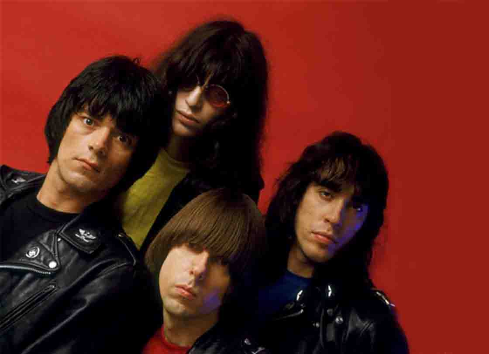

¿Quiénes fueron The Ramones?
Ramones fue una banda de punk formada en Forest Hills, en el distrito de Queens (Nueva York, Estados Unidos) en 1974, y disuelta veintidós años más tarde, en 1996.
Pioneros y líderes del naciente punk, cimentaron las bases de este género musical con composiciones simples, minimalistas, repetitivas y letras muy simples o incluso sin sentido, en clara oposición a la pomposidad y la fastuosidad de las bandas que triunfaban en el mercado de los años 1970: con sus largos solos de guitarra, las complejas canciones de rock progresivo y sus enigmáticas letras. Su sonido se caracteriza por ser rápido y directo, con influencias del rockabilly de los años 1950, el surf rock, The Beatles, The Who, The Velvet Underground, las bandas de chicas de los años 1960 como The Shangri-Las y el garage protopunk de MC5 y The Stooges.
Ramones lideró la primera ola del punk en Nueva York, compartiendo el escenario del mítico club CBGB con otras bandas de punk como Blondie, Johnny Thunders and the Heartbreakers, Richard Hell & The Voidoids entre otros, de protopunk como Patti Smith, Television y de new wave como Talking Heads entre otros, y sirviendo de inspiración para la gran mayoría de las bandas de punk surgidas en la década de 1970 tanto de EE. UU. como en el Reino Unido. Siendo una de las bandas más importantes de la historia del rock, su influencia se percibe en casi todas las formaciones de punk posteriores.